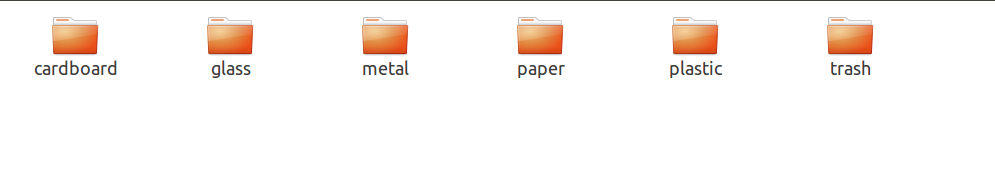

图像识别之垃圾分类
本学期上的一个课程的（人工智能）课程作业。做图片分类，可以说是计算机视觉中最简单的一个任务。
本次作业是在网站上提交模型和预测代码。博主提交的模型在网站上测试结果是所有待预测图片都预测正确，所以是100分，希望可以帮助到学弟学妹。
要完成这个也很简单，现在已经有很多很成熟的特征提取的网络了，所以我在做这个作业的时候的基本思想也是利用微调。关于微调的基本概念可以参考博主的这篇博文。
所有的代码和模型和数据博主已经上传到自己的github上了
和所有的训练模型的代码一样，博主的代码也可以总的来说分为三个部分。
dataset的处理， 模型构建(包括前向传播代码)，训练逻辑
这里特别说一下，经过这段时间炼丹的一些体会：
所有的模型都是适合自己的数据集的才是最好的，比如我开始想着越深的网络效果肯定很好，所以我采用的是resnet101，最后在训练集合上准确率达到了99，非常开心，去网站上一提交，非常棒70%，很明显这是过拟合了，所以当数据量比较小的时候，使用很深的网络必然会导致过拟合。所以在试过101,50,34,18之后，选择了34，34的效果是最好的。（ps：个人目前真的觉得炼丹真的是太太太太太太无聊了！。。。。呜呜呜）
1、数据部分
垃圾分类的图片如上述存储，每一个文件夹是每一类的图片。首先将其随机划分训练和验证集合
path="dataset-resized"
model_path="0.8271276595744681.pth"
traind = {}
vald = {}
classes = os.listdir(path)
classes.remove(".DS_Store")
print(classes)
for garbage in classes:
name = os.listdir(path + "/" + garbage)
for imgname in name:
probo = random.randint(1, 100)
if probo > 85:
vald[garbage + "/" + imgname] = garbage
else:
traind[garbage + "/" + imgname] = garbage
print("train{},val{}".format(len(traind.keys()), len(vald.keys())))然后继承dataset，重新写一下自己的dataset
# 定义dataset
class myDataset(torch.utils.data.Dataset):
def __init__(self, data_root, trainorval,input_size,classes,transform, **kwargs):
self.data_root=data_root
self.dataid=[x for x in trainorval.keys()]
self.data=trainorval
self.classes=classes
self.transform=transform
self.input_size=input_size,
def __len__(self):
return len(self.data.keys())
def __getitem__(self, idx):
path = self.dataid[idx]
img =read_img(os.path.join(self.data_root, path))
img=self.transform(img)
return img,self.classes.index(self.data[path])2、模型构建
这么简单的任务，我们完全可以使用pytorch官方发表的经典模型来做微调。pytorch发布的模型的详情可以 所有模型 很多很新的模型也有发表，自己要搭建模型的时候，看官方源码很有帮助。其位置在torchvision.models
微调也很简单，本次的作业我采用的是resnet，很经典的一个网络，原来分类的数目是1000类，而本次任务是6类，所以我们只需要改变最后的全连接层，由于之前的特征提取网络是在很大的imagenet上训练的，所以我们可以只训练最后的全连接层。模型的构建和初始化代码如下所示
#初始化模型
def initialize_model(model_name,feature_extract,num_classes,use_pretrained=True):
if model_name=="resnet":
model_ft=models.resnet34(pretrained=use_pretrained)
set_parameter_requires_grad(model_ft,feature_extract)
num_ftrs=model_ft.fc.in_features
model_ft.fc=torch.nn.Linear(num_ftrs,num_classes)
input_size=224
else:
print("model not implemented")
return None,None
return model_ft,input_size
def initialize_model1(model_name,model_path,num_classes,use_pretrained=True):
if model_name=="resnet":
model_ft=models.resnet34()
num_ftrs=model_ft.fc.in_features
model_ft.fc=torch.nn.Linear(num_ftrs,num_classes)
model_ft.load_state_dict(torch.load(model_path))
input_size=224
else:
print("model not implemented")
return None,None
return model_ft,input_size后面这个初始化是在自己训练的模型上继续训练
3 、训练逻辑
可以直接见代码
def train_model(model,loss_fn,optimizer,num_epochs=500):
best_model_wts=copy.deepcopy(model.state_dict())
best_acc=0.
val_acc_history=[]
for epoch in range(num_epochs):
for phase in ["train","val"]:
running_loss=0
running_corrects=0
if phase=="train":
dataloader=traindataloader
model.train()
else:
model.eval()
dataloader=testdataloader
for inputs,labels in dataloader:
inputs,labels=inputs.to(device),labels.to(device)
with torch.autograd.set_grad_enabled(phase=="train"):
outputs=model(inputs)
loss=loss_fn(outputs,labels)
preds=outputs.argmax(dim=1)
if phase=="train":
optimizer.zero_grad()
loss.backward()
optimizer.step()
running_loss+=loss.item()*inputs.size(0)
running_corrects+=torch.sum(preds.view(-1)==labels.view(-1)).item()
epoch_loss=running_loss/len(dataloader.dataset)
epoch_acc=running_corrects/len(dataloader.dataset)
print("epoch:{}phase:{}loss:{},acc:{}".format(epoch,phase,epoch_loss,epoch_acc))
if phase=="val"and epoch_acc>best_acc:
best_acc=epoch_acc
best_model_wts = copy.deepcopy(model.state_dict())
if phase=="val":
val_acc_history.append(epoch_acc)
torch.save(best_model_wts,str(best_acc)+".pth")
return model,val_acc_history4、完整代码
所有的训练代码如下，也可以直接去博主的github上下载
#!en-coding=utf-8
import os
import random
from PIL import Image
import torch
from torchvision import *
import torchvision
from torch.utils.data import *
import copy
def read_img(path):
return Image.open(path)
# 随机划分训练集和验证集合
path="dataset-resized"
model_path="0.8271276595744681.pth"
traind = {}
vald = {}
classes = os.listdir(path)
classes.remove(".DS_Store")
print(classes)
for garbage in classes:
name = os.listdir(path + "/" + garbage)
for imgname in name:
probo = random.randint(1, 100)
if probo > 85:
vald[garbage + "/" + imgname] = garbage
else:
traind[garbage + "/" + imgname] = garbage
print("train{},val{}".format(len(traind.keys()), len(vald.keys())))
# 定义dataset
class myDataset(torch.utils.data.Dataset):
def __init__(self, data_root, trainorval,input_size,classes,transform, **kwargs):
self.data_root=data_root
self.dataid=[x for x in trainorval.keys()]
self.data=trainorval
self.classes=classes
self.transform=transform
self.input_size=input_size,
def __len__(self):
return len(self.data.keys())
def __getitem__(self, idx):
path = self.dataid[idx]
img =read_img(os.path.join(self.data_root, path))
img=self.transform(img)
return img,self.classes.index(self.data[path])
# 初始化设定
model_name="resnet"
num_classes=6
batch_size=48
num_epochs=80
input_size=224
transformtrain=torchvision.transforms.Compose(
[torchvision.transforms.RandomResizedCrop(224),
torchvision.transforms.RandomHorizontalFlip(),
torchvision.transforms.ToTensor(),
torchvision.transforms.Normalize([0.485, 0.456, 0.406], [0.229, 0.224, 0.225]) # 均值 方差
])
transformtest=torchvision.transforms.Compose(
[torchvision.transforms.Resize((224,224)),
torchvision.transforms.ToTensor(),
torchvision.transforms.Normalize([0.485, 0.456, 0.406], [0.229, 0.224, 0.225]) # 均值 方差
])
# 是否有GPU
device=torch.device("cuda" if torch.cuda.is_available() else "cpu")
# Flag for extracting when False,we finetuning the whole model,when True,we only update the reshaped layer params
feature_extract=True
# 设置哪些层需要梯度
def set_parameter_requires_grad(model,feature_extract):
if feature_extract:
for param in model.parameters():
param.requires_grad=False
#初始化模型
def initialize_model(model_name,feature_extract,num_classes,use_pretrained=True):
if model_name=="resnet":
model_ft=models.resnet34(pretrained=use_pretrained)
set_parameter_requires_grad(model_ft,feature_extract)
num_ftrs=model_ft.fc.in_features
model_ft.fc=torch.nn.Linear(num_ftrs,num_classes)
input_size=224
else:
print("model not implemented")
return None,None
return model_ft,input_size
def initialize_model1(model_name,model_path,num_classes,use_pretrained=True):
if model_name=="resnet":
model_ft=models.resnet34()
num_ftrs=model_ft.fc.in_features
model_ft.fc=torch.nn.Linear(num_ftrs,num_classes)
model_ft.load_state_dict(torch.load(model_path))
input_size=224
else:
print("model not implemented")
return None,None
return model_ft,input_size
train_set = myDataset(path,traind,224,classes,transformtrain)
test_set = myDataset(path,vald,224,classes,transformtest)
traindataloader = DataLoader(
train_set, shuffle=True, num_workers=4, batch_size=8)
testdataloader = DataLoader(
test_set, shuffle=True, num_workers=4, batch_size=8)
def train_model(model,loss_fn,optimizer,num_epochs=500):
best_model_wts=copy.deepcopy(model.state_dict())
best_acc=0.
val_acc_history=[]
for epoch in range(num_epochs):
for phase in ["train","val"]:
running_loss=0
running_corrects=0
if phase=="train":
dataloader=traindataloader
model.train()
else:
model.eval()
dataloader=testdataloader
for inputs,labels in dataloader:
inputs,labels=inputs.to(device),labels.to(device)
with torch.autograd.set_grad_enabled(phase=="train"):
outputs=model(inputs)
loss=loss_fn(outputs,labels)
preds=outputs.argmax(dim=1)
if phase=="train":
optimizer.zero_grad()
loss.backward()
optimizer.step()
running_loss+=loss.item()*inputs.size(0)
running_corrects+=torch.sum(preds.view(-1)==labels.view(-1)).item()
epoch_loss=running_loss/len(dataloader.dataset)
epoch_acc=running_corrects/len(dataloader.dataset)
print("epoch:{}phase:{}loss:{},acc:{}".format(epoch,phase,epoch_loss,epoch_acc))
if phase=="val"and epoch_acc>best_acc:
best_acc=epoch_acc
best_model_wts = copy.deepcopy(model.state_dict())
if phase=="val":
val_acc_history.append(epoch_acc)
torch.save(best_model_wts,str(best_acc)+".pth")
return model,val_acc_history
#model_ft,input_size=initialize_model(model_name,feature_extract,num_classes,use_pretrained=True)
model_ft,input_size=initialize_model1(model_name,model_path,num_classes,use_pretrained=True)
model_ft=model_ft.to(device)
optimizer=torch.optim.SGD(filter(lambda p:p.requires_grad,model_ft.parameters()),lr=0.0001,momentum=0.9)
loss_fn=torch.nn.CrossEntropyLoss()
model,val_acc_history=train_model(model_ft,loss_fn,optimizer,num_epochs=num_epochs)
5、上传网站代码
import os
from PIL import Image
import torch
from torchvision import *
import torchvision
# 数据集路径
path = "./datasets/la1ji1fe1nle4ishu4ju4ji22-momodel/dataset-resized"
classes=['trash','plastic','glass','metal','carboard','paper']
def initialize_model(model_name,model_path,num_classes,use_pretrained=True):
if model_name=="resnet":
model_ft=models.resnet101()
num_ftrs=model_ft.fc.in_features
model_ft.fc=torch.nn.Linear(num_ftrs,num_classes)
model_ft.load_state_dict(torch.load(model_path,map_location=torch.device('cpu'),encoding='utf-8'))
input_size=224
else:
print("model not implemented")
return None,None
return model_ft,input_size
def predict(img):
model_name="resnet"
# 加载模型, 默认'results/dnn.h5',请填写你的最佳模型
model_path = 'results/0.9410745233968805.pth'
try:
# 作业提交时测试用, 请勿删除此部分
model_path = os.path.realpath(__file__).replace('main.py', model_path)
except NameError:
model_path = './' + model_path
model,_=initialize_model(model_name,model_path=model_path,num_classes=6)
model.eval()
transformtest = torchvision.transforms.Compose(
[torchvision.transforms.Resize((224, 224)),
torchvision.transforms.ToTensor(),
torchvision.transforms.Normalize([0.485, 0.456, 0.406], [0.229, 0.224, 0.225]) # 均值 方差
])
#input=Image.open(image_path)
input=transformtest(img)
input=input.reshape(1,3,224,224)
output=model(input)
preds = output.argmax(dim=1)
print(classes[preds])
print(classes)
return classes[preds]